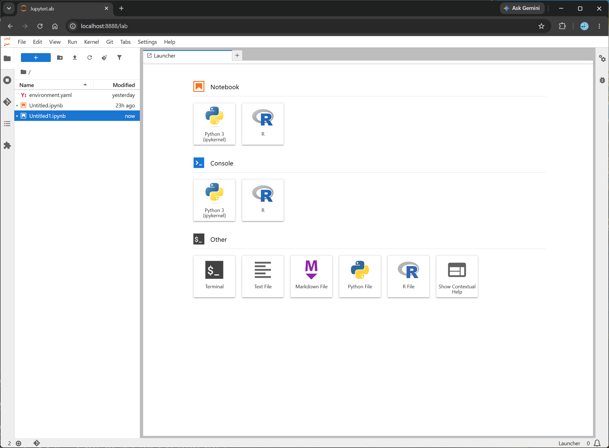
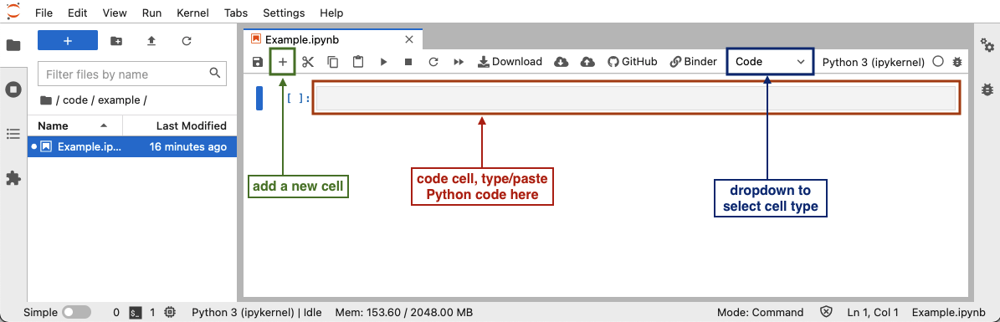

Summary and Setup
This lesson shows how to use R and the EBImage library to perform basic image processing.
Prerequisites
This lesson assumes you have a working knowledge of R and some previous exposure to the Bash shell. These requirements can be fulfilled by:
- Completing a Software Carpentry R workshop or
- Independent exposure to both R and the Bash shell.
If you’re unsure whether you have enough experience to participate in this workshop, please read over this detailed list, which gives all of the functions, operators, and other concepts you will need to be familiar with.
Overview
Before starting this lesson, please complete the software and data setup described below.
This lesson uses:
- JupyterLab
- R
- An R kernel for Jupyter
- The
EBImageandtidyverselibraries to extend base R.
We will use a Python virtual environment created by Conda to install and manage all software and dependencies required for the lesson. We will not use an R integrated development environment, like RStudio. Rather we will enter commands into a JuPyteR notebook that will execute the R commands using an R kernel instead of a Python kernel.
Data
click on the download button for the environment.yaml file and data
folder. Place the environment.yaml file inside the
bioimage-r folder. Unzip and extract the
data.zip file into the bioimage-r folder. The
data file shoud create a data folder inside the bioimage-r
folder with several subfolders with episode names and the associated
data for the episode in each of those subfolders.
We recommend the following directory structure:
bioimage-r/
|
├── data
|
|-03-reading-bioimages
|-04-microscopy-metadata
|-etc.
|
├── environment.yamlSoftware
Step 1: Install Miniforge
Install Miniforge for your operating system:
https://conda-forge.org/download/
Miniforge provides the Conda package manager that we will use to create the virtual environment.
The next steps assumes that conda is available to manage
your Python environment. After installation, verify Conda is
available.
You should see a Conda version number -
e.g. conda 26.1.1
Step 2: Create the Virtual Lesson Environment
- Download the environment description file:
environment.ymland place it in your working directory (bioimage-r). (This file should already be downloaded, if you followed the instructions above.)
- Create the lesson environment.
This will create a python virtual environment named
bioimage-r
and install:
- Python
- JupyterLab
- R
- IRkernel
- tidyverse
- EBImage
- RBioFormats
- other R packages reuired for the lessons or that are dependencies.
The installation may take several minutes. Click OK if your computer asks you to approve any installations.
Step 3: Activate the Environment
Before activating the virtual environment, your command prompt should
begin with (base). After activation, your command prompt
should now begin with the name of the active virtual environment in
parentheses, e.g: bioimage-r.
Step 4: Launch JupyterLab
A bunch of text will start to appear in your terminal and scroll down your screen as the jupyterLab starts up. JupyterLab should open automatically in your web browser. If it does not, you may see a link to click towards the end of the text that appears in your terminal.
Step 5: Open an R Notebook
In JupyterLab:
The link should open to a

- Click on the R button to open a new, untitled notebook running an R kernel.
If there is no launcher, then:
- Select File → New → Notebook (or File → New → Launcher)
- Choose the R kernel
- A new notebook should start in a new tab.
If an R kernel is not available, consult the troubleshooting section below.
Testing Your Installation
Running Cells
To run code in JupyterLab:
- Click inside a code cell.
- Press
Shift + Enter.
The cell will execute and display the result.
Create a notebook cell, copy the code below into the cell and run it
(shift + enter):
R
library(EBImage)
img <- Image(
matrix(
runif(10000),
nrow = 100
)
)
display(img)
If a grayscale image of nothing appears and no error message is generated, your installation is working correctly.
Test Required Packages
Run:
R
library(tidyverse)
library(EBImage)
sessionInfo()
Verify that:
- R loads successfully
- tidyverse loads successfully
- EBImage loads successfully
Test Data Access
Run:
R
list.files("data")
You should see the contents of the lesson data directory.

To run code in a Jupyter notebook cell, click on a cell in the notebook (or add a new one by clicking the+ button in the toolbar), make sure that
the cell type is set to “Code” (check the dropdown in the toolbar), and
add the R code in that cell. After you have added the code, you can run
the cell by selecting “Run” -> “Run selected cell” in the top menu,
or pressing Shift+Enter.
Troubleshooting
Conda Not Found
If: conda –version returns an error, restart your terminal after installing Miniforge.
Windows users should ensure they are using Miniforge Prompt, GitBash prompt or using Linux in the WSL environment.
JupyterLab Will Not Start
Verify:
If no version number is displayed, recreate the Conda environment:
R Kernel Not Listed
Run:
You should see an entry for R.
If no R kernel appears, recreate the Conda environment.
EBImage Will Not Load
Activate the lesson environment:
Then launch JupyterLab again.
A small number of exercises will require you to run commands in a terminal. Windows users should use PowerShell for this. PowerShell is probably installed by default but if not you should download and install it.